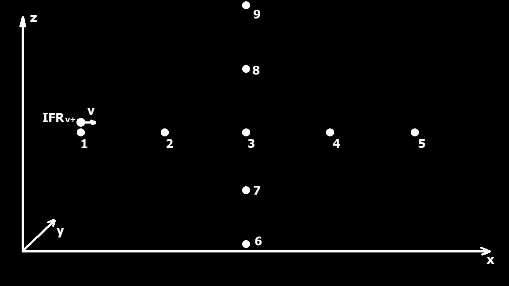
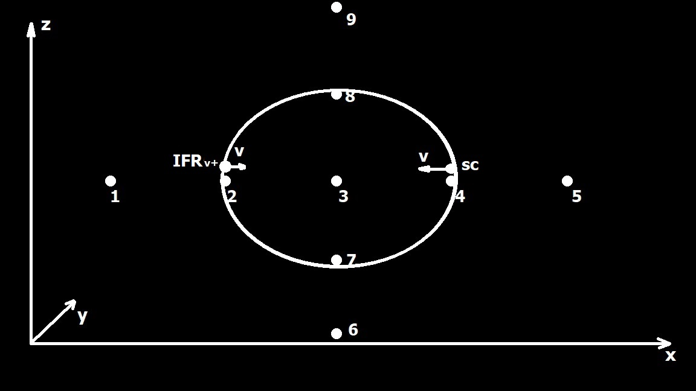
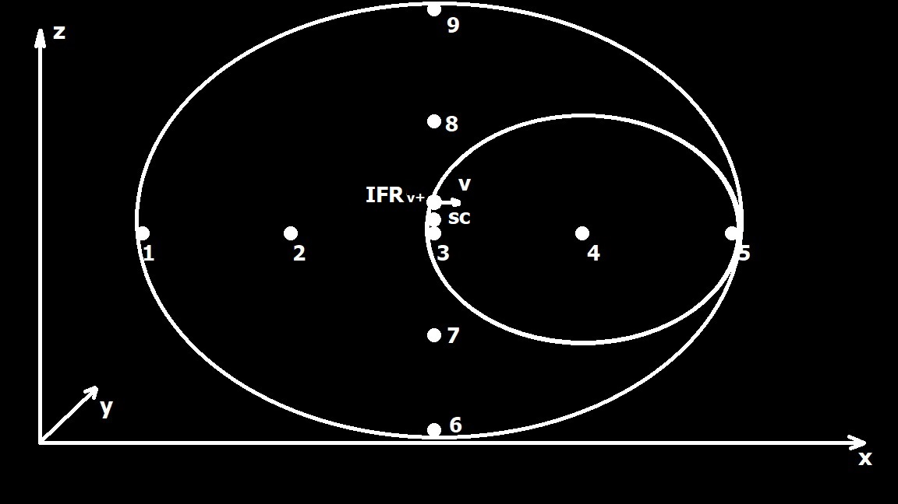
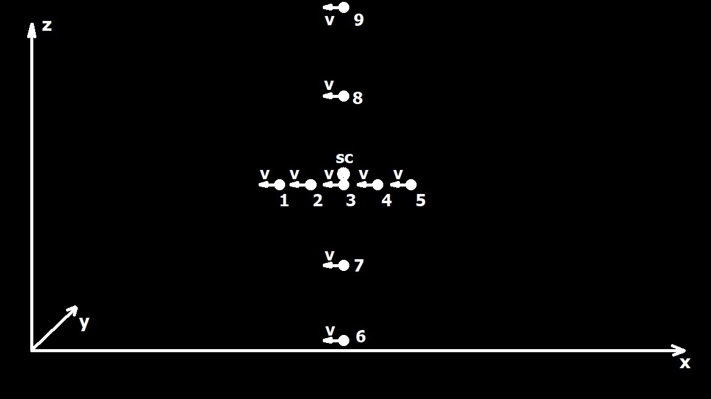
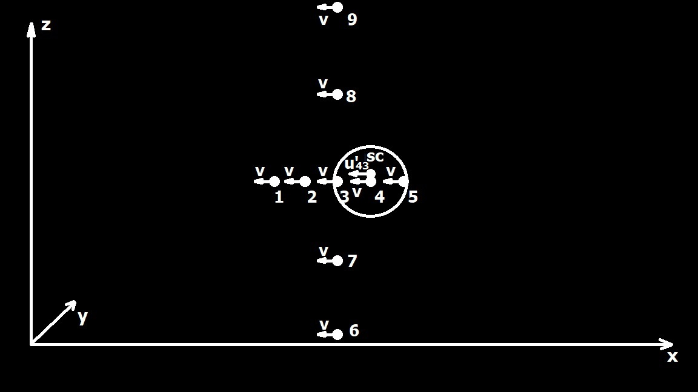
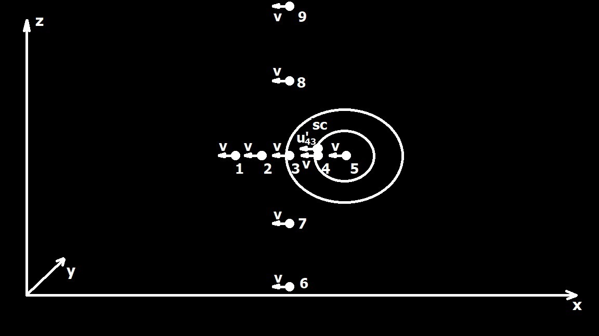
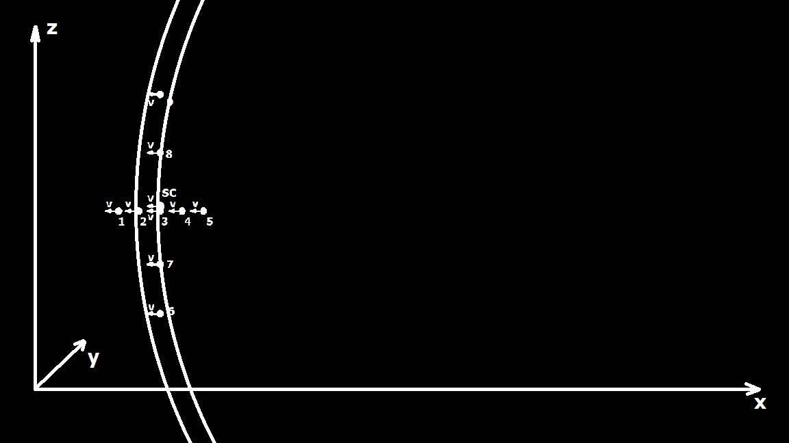
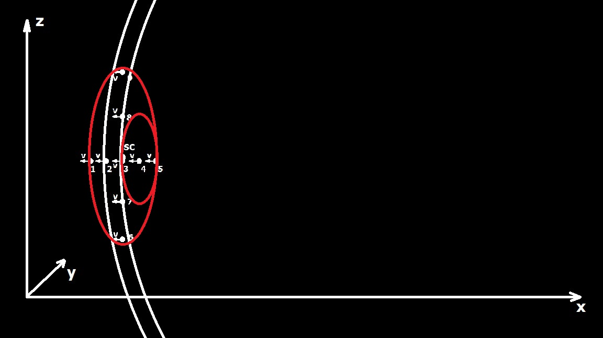
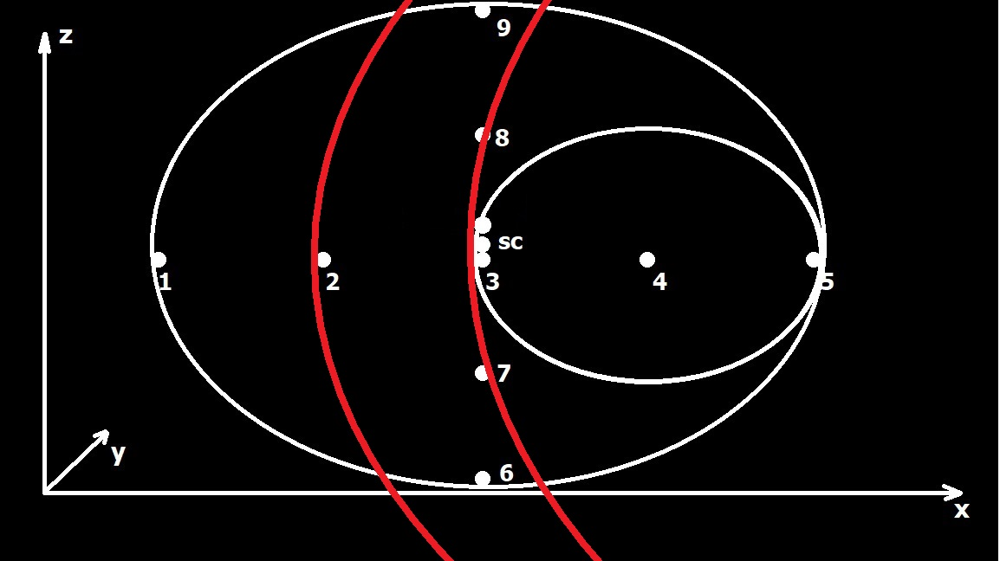

The inequality of inertial reference frames of the universe
Annotation¶
The paper presents several types of new advanced thought experiments considered in the framework of the special theory of relativity and the results of their analysis.
The description of the thought experiment is presented in which objects move at a speed tending to infinity, which contradicts the limiting speed of light according to the theory of relativity.
Another thought experiment with flashes of light is also described. It is shown that the resulting shape of the light surfaces, the location of the radiation and the dimensions may differ fundamentally for different observers according to the theory of relativity. The observers see these light surfaces together, being at the end of the thought experiment in the same place and moment of time in a common inertial frame of reference. This contradicts all real experimental data.
The results obtained prove that different inertial reference frames moving relative to each other are unequal and cannot be described by general laws.
To eliminate these problems, a special inertial reference frame has been proposed, with respect to which calculations can be performed and results consistent with reality can be obtained.
Introduction¶
The twin paradox is the thought experiment which was invented after Einstein formulated the special theory of relativity (STR). In this experiment, it is not clear which object is experiencing time dilation [1,2,3,4,5,6,7]. Then several scientists pointed out that there is no paradox. They have come up with a number of methods to explain what is happening in this thought experiment [8,9,10,11,12,13]. However, these methods use additional means that are not related to the special theory of relativity. At the same time, the thought experiment itself is simplified as much as possible and does not show the completeness of the problem of using the theory of relativity.
If we consider solutions exclusively within the framework of Einstein's special theory of relativity, then they give a small deviation from reality only for a narrow range of cases in a privileged frame of reference and are in general incorrect. Let's conduct a thought experiments to prove it.
Thought experiments proving the inequality of inertial reference frames¶
For further description, it is necessary to introduce a new term.
An immobile frame of reference (ImFR) is an inertial reference frame (IFR) associated with an object characterized by zero shift of cosmic microwave background radiation (zero dipole anisotropy). The ImFR can be associated with different objects, but their relative velocity is zero. It should be particularly noted that the ImFR differs from the reference frame associated with the Earth by only a few hundred kilometers per second. This is the main reason why most calculations according to the theory of relativity are close to real experimental results.
Time dilation or space compression factor:
\(F(v) = \sqrt{1 - \frac{v^2}{c^2}}\), (1)
where \(v\) is the velocity of the object relative to IFR or ImFR.
Recalculating the speed when changing the IFR:
\(\large{u_x' = \frac{u_x-v}{1-\frac{u_x v}{c^2}}}\), (2)
where \(v\) is the velocity of \(IFR'\) relative to the base IFR, \(u_x\) is the velocity of the object relative to the base IFR, \(u_x'\) is the velocity of the object relative to \(IFR'\).
Thought experiment 1 description:
Let's take two spacecraft with synchronized clocks (or two short-lived particles received at the same time). For simplicity, they move only along one coordinate axis - \(x\). The time spent on acceleration is considered negligible.
Let \(v\) be the velocity of the spacecraft relative to the ImFR (or with an error relative to the Earth).
- Begin with both objects flying together at velocity \(v=0\). The first one always rests.
- Let's accelerate the second one to a velocity tending to \(c\).
- Wait a significant amount of time \(0.5t\).
- Accelerate the second one to a velocity tending to \(-c\).
- Wait a significant amount of time \(0.5t\).
- Accelerate the second one to \(0\).
- End of the thought experiment with both objects flying together.
Results will be obtained in the ImFR using the formula (1):
- spacecraft 1: \(t_1=F(0)(0.5t)+F(0)(0.5t)=0.5t+0.5t=t\);
- spacecraft 2: \(t_2=F(c)(0.5t)+F(-c)(0.5t)\to0\).
Let \(t\) be equal to a billion years. A typical pattern is observed in the ImFR and should coincide with the results of real experiments.
Now let's see what will be observed from the point of view of each of the spacecraft according to the theory of relativity.
The results of the first spacecraft will be identical to the results in the ImFR, since the reference frame is the same.
For the second spacecraft, the change in its own time recorded on the clock will tend to zero (it should coincide with the results of real experiments). However, colossal changes will be recorded in the structure of the universe during this time. Objects whose speed tends to the speed of light in the ImFR will travel a distance of almost a billion light years. This means that their speed relative to the second spacecraft should have been tending to infinity (a billion light-years divided by time tending to zero). However, this is impossible according to the theory of relativity, since the limiting speed must be equal to the speed of light.
We get a contradiction:
- or the speed of objects can tend to infinity with almost zero time change on the clock of the second spacecraft. This indicates the fallacy of the theory of relativity, but corresponds to reality.
- or on the clock of the second spacecraft, the same amount of time must pass as for the first spacecraft (a billion years) in order to preserve the limit speed of light for the objects of the universe. This fits into the concept of relativity theory, but contradicts reality.
It is worth noting that what is happening cannot be explained by the Lorentz contraction of length, at least because it does not affect the plane perpendicular to the axis of motion. There, objects whose speed tends to the speed of light in the ImFR will travel a distance of almost a billion light years.
In fact, we get that the universe has changed by a billion years, but the time for the second spacecraft has almost unchanged.
This is confirmed by experimental data, for example, for short-lived particles accelerated to speeds close to the speed of light. In fact, for these cases, the universe manages to change for a time orders of magnitude greater than the particle's own lifetime (isuch particles decay by several orders of magnitude faster when rested in ImFR). Of course, the Lorentz factor is not as high as in the thought experiment, but this is a purely technical problem.
Let's consider another thought experiment showing how big the discrepancy between the theory of relativity and reality can be.
Thought experiment 2 description:
Let's take a few spacecrafts. For simplicity, they move only along one coordinate axis - \(x\) and have zero coordinates along the \(y\) and \(z\) axes. All other objects are located in the \(xz\) plane. The time spent on acceleration is considered negligible.
Let IFR be associated with object 3 (\(IFR_{o3}\)) in Figure 1a.

Figure 1a – Objects in an \(IFR_{o3}\)In Figure 1a, the distances between space objects are selected as follows: \(l=l_{12}=l_{IFR_{v+}2}=l_{23}=l_{34}=l_{45}=l_{67}=l_{73}=l_{38}=l_{89}\)
A spacecraft launches from object 3 along the \(x\) axis and acquires a velocity vector \(v\) during the time tending to zero.
The beginning of a thought experiment. At this moment, the spacecraft emits a pulse of light. Then it moves for a time equal to \(t\) by the clock \(IFR_{o3}\). \(l\) is chosen in such a way that \(l=vt\). Then the spacecraft accelerates and acquires a velocity vector \(-v\) in a time tending to zero.
We get the picture shown in Figure 1b.

Figure 1b – Objects in an \(IFR_{o3}\) after the expiration of time \(t\) after the start of the thought experiment according to the theory of relativityAt this moment, the spacecraft emits a pulse of light. Then it moves for a time equal to \(t\) by the clock \(IFR_{o3}\). Then the spacecraft accelerates to a speed equal to zero in a time tending to zero.
The end of the thought experiment. We get the picture shown in Figure 1с.

Figure 1с – Objects in an \(IFR_{o3}\) after the expiration of time \(2t\) after the start of the thought experiment according to the theory of relativityNow let's see what we will observe relative to another \(IFR_{v+}\) associated with another spacecraft moving with a velocity vector \(v\) relative to the original \(IFR_{o3}\).
Once again, we note that the spacecraft, \(IFR_{o3}\) and \(IFR_{v+}\) move exclusively along the same axis \(x\) and have zero coordinates along the axes \(y\) and \(z\).
To improve the quality of understanding of what is happening, we detail a specific quantitative description. Let \(v=0.999c\). Then, due to the Lorentz contraction, the entire space along the \(x\) axis will shrink.
Let's find the compression ratio of the space along the \(x\) axis according to the formula (1):
\(F(v)=F(0.999c)\approx0.0447101778\)
That is, in \(IFR_{v+}\): \(l'=l_{12}'=l_{23}'=l_{34}'=l_{45}'=F(0.999c)l\approx0.0447101778l\) and \(l=l_{67}'=l_{73}'=l_{38}'=l_{89}'\)
Using formula (2), we calculate the speeds of the spacecraft at each stage:
\(\large{u_{34}'=0}\); \(\large{u_{43}' = \frac{-v-v}{1+\frac{v^2}{c^2}}= \frac{-0.999c-0.999c}{1+\frac{{(0.999c)}^2}{c^2}}\approx-0.999999499c}\)
The time taken by the spacecraft to travel from object 3 to object 4 can be found either through the time dilation factor according to formula (1):
\(\tau=F(v)t=F(0.999c)t\approx0.0447101778t\)
or divide the distance by the speed in \(IFR_{v+}\):
\(\tau=\frac{l'}{v}=\frac{F(v)l}{v}=\frac{F(v)vt}{v}=F(0.999c)t\approx0.0447101778t\)
Figure 2a shows what should be observed in an \(IFR_{v+}\) at the beginning of a thought experiment according to the theory of relativity.

Figure 2a – Objects in an \(IFR_{v+}\) at the beginning of a thought experiment according to the theory of relativityFigure 2b shows what should be observed in an \(IFR_{v+}\) after the expiration of time \(\tau\) after the start of the thought experiment according to the theory of relativity.

Figure 2b – Objects in an \(IFR_{v+}\) after the expiration of time \(\tau\) after the start of a thought experiment according to the theory of relativityAccording to the theory of relativity, the propagation of a flash of light in any IFR will be a sphere of a certain radius, since according to the second postulate in any IFR, the speed of light is \(c\). It does not matter at what speed the radiating object is moving.
Let's see for clarity what will be observed after adittional time interval \(\tau\). Figure 2c shows what should be observed in an \(IFR_{v+}\) after the expiration of time \(2\tau\) after the start of the thought experiment according to the theory of relativity.

Figure 2c – Objects in an \(IFR_{v+}\) after the expiration of time \(2\tau\) after the start of a thought experiment according to the theory of relativityNow let's calculate when the spacecraft will reach object 3. To do this, we need to find the speed difference between the spacecraft and object 3:
\(\Delta v=u_{43}'-v_{o3}\approx-0.999999499c+0.999c\approx-0.000999499c\)
Based on this, we can find the travel time of the spacecraft in \(IFR_{v+}\) in the second stage:
\(\large{t_{43}'=\left|\frac{l'}{\Delta v}\right|=\left|\frac{v\tau}{\Delta v}\right|\approx\frac{0.999c\tau}{-0.000999499c}\approx999.5\tau}\)
Then the spacecraft accelerates to a speed equal to \(-v\) in a time tending to zero and will move along with object 3.
The end of the thought experiment. We get the picture shown in the figure 2d.

Figure 2d – Objects in an \(IFR_{v+}\) after the expiration of time \(1000.5\tau\) after the start of a thought experiment according to the theory of relativityWe get the radii of the light spheres in \(IFR_{v+}\):
\(R_{1v+}\approx1000.5\tau c\); \(R_{2v+}\approx999.5\tau c\)
At the same time, in \(IFR_{o3}\), the radii of the light spheres are:
\(R_{1o3}\approx2t c\approx44.733\tau c\); \(R_{2o3}\approx t c\approx22.366\tau c\)
In order to compare the results, it is necessary either to accelerate the object with which \(IFR_{o3}\) was associated to the speed of \(IFR_{v+}\), or to accelerate the object with which \(IFR_{v+}\) was associated to the speed of \(IFR_{o3}\). Then the observers will be in the same place and time in the same IFR.
Accelerating the object with which \(IFR_{o3}\) was associated to the speed of \(IFR_{v+}\) in a time tending to zero. We get that it is necessary to take into account the Lorentz contraction. The entire space, including the light spheres, will shrink along the \(x\) axis. Compression factor \(F(v)=F(0.999c)\approx0.0447101778\). As a result, we will get ellipsoids that are similar to the one shown in Figure 3.
 Figure 3 – Ellipsoid
Figure 3 – Ellipsoid
Parameters of the surface of the light ellipsoid for the first light flash in \(IFR_{v+}\):
\(b=c=R_{1o3}\approx44.733\tau c\); \(a=0.0447101778R_{1o3}\approx2\tau c\)
Parameters of the surface of the light ellipsoid for the second light flash in \(IFR_{v+}\):
\(b=c=R_{2o3}\approx22.366\tau c\); \(a=0.0447101778R_{2o3}\approx\tau c\)
Figure 4a shows white curves of light spheres according to the calculations of the observer in \(IFR_{v+}\), and red curves show light ellipsoids from the point of view of the observer on the spacecraft with which \(IFR_{o3}\) was associated before the end of the thought experiment (after the end of the thought experiment, this spacecraft was accelerated to the speed of \(IFR_{v+}\) for the time tending to zero).

Figure 4a – Objects in an \(IFR_{v+}\) after the expiration of time \(1000.5\tau\) after the start of a thought experiment according to the theory of relativity for different observersAccelerating the object with which \(IFR_{v+}\) was associated to the speed of \(IFR_{o3}\) in a time tending to zero. We get that it is necessary to take into account the Lorentz contraction. The entire space, including the light spheres, will expand along the \(x\) axis. The factor of stretching \(1/F(v)=1/F(0.999c)\approx22.366\). As a result, we will get ellipsoids that are similar to the one shown in Figure 3.
Parameters of the surface of the light ellipsoid for the first light flash in \(IFR_{o3}\):
\(b=c=R_{1v+}\approx1000.5\tau c\); \(a=22.366R_{1v+}\approx22377\tau c\)
Parameters of the surface of the light ellipsoid for the second light flash in \(IFR_{o3}\):
\(b=c=R_{2v+}\approx999.5\tau c\); \(a=22.366R_{2v+}\approx22355\tau c\)
Figure 4b shows white curves of light spheres according to the calculations of the observer in \(IFR_{o3}\), and red curves show light ellipsoids from the point of view of the observer on the spacecraft with which \(IFR_{v+}\) was associated before the end of the thought experiment (after the end of the thought experiment, this spacecraft was accelerated to the speed of \(IFR_{o3}\) for the time tending to zero).

Figure 4b – Objects in an \(IFR_{o3}\) after the expiration of time \(2t\) after the start of a thought experiment according to the theory of relativity for different observersIt turns out that no matter what IFR we are in, one observer will say that we will see spheres, and another observer will say that we will see ellipsoids. As you can see, the parameters of spheres and ellipsoids observed by different observers are completely different in a specific place and time in a specific IFR. Moreover, their centers also have different locations in space. At the same time, in all available real experiments, observers always see the same thing if they are in the same place and time in the same IFR - objective reality.
To improve the quality of understanding of what is happening, let's assume that the entire space is filled with fine dust motionless in \(IFR_{o3}\). Then it becomes clear that the flashes of light will reach all the dust particles in the area of previously calculated spheres and ellipsoids. We get that according to the theory of relativity, different observers, after their transition to one common IFR, will fix different regions of space with dust that has been highlighted. This contradicts reality, since in fact observers will record the same picture for both of them.
It must be said that for any other IFRs moving relative to each other, the problem will persist. The difference will be only in the amount of deviations between spheres and ellipsoids.
Based on the fact that any composite objects move slower than the speed of light, they must, according to the theory of relativity, be inside the spheres and ellipsoids described above, if they were launched from the same spacecraft no earlier than the moment of the flash of light. This further indicates the discrepancy between the theory of relativity and reality.
In the end, we have obtained results proving that different IFRs are unequal and cannot be described by general laws, the concept of relativity is erroneous and our universe is absolute. It should also be emphasized once again that the reason for the good correspondence of the theory of relativity to experimental data is that the ImFR differs from the reference frame associated with the Earth by only a few hundred kilometers per second and this leads to a minimum error.
Conclusion¶
Einstein's theory of relativity doesn't use and doesn't give an understanding about of the absolute characteristics, namely the initial velocities of the studied pair of objects. In addition, it also doesn't give an understanding of whether an object is accelerating or decelerating, since only relative velocities and accelerations between objects are important in it. That is the essence of this theory. And it is this concept of relativity that makes the theory of relativity erroneous in the general case.
Of course, the assumption that the ImFR is an inertial reference frame relative to which everything in the universe is correctly calculated requires careful verification. However, based on the analysis of the above-described thought experiments, it can be argued that Einstein's theory of relativity and the concept of relativity of the universe are erroneous, since in a wide range of cases they do not correctly describe the behavior of objects qualitatively and quantitatively.
Also have been obtained results proving that different IFRs are unequal and cannot be described by general laws. This leads to an understanding of the absolute structure of the universe. In fact, it is assumed that the ImFR is at rest within the framework of the concept of the absolute universe. This is the basis for building the concept of the absolute universe. Based on this, it is the speed relative to the ImFR that is the key parameter determining how much time the clock will show.
References¶
- Einstein, A.: On the electrodynamics of moving bodies. Annalen der Physik 322(10), 891–921 (1905) https://doi.org/10.1002/andp.19053221004.
- Einstein, A.: Die relativit¨ats-theorie. Vierteljahrsschrift der Naturforschenden Gesellschaft in Z¨urich 56, 1–14 (1911).
- Resnick, R.: Supplementary Topic B: The Twin Paradox, pp. 201–209. John Wiley and Sons, Inc., New York (1968).
- Crowell, B.: The Twin Paradox, pp. 23–24. Light and Matter, Fullerton, California (2000).
- Serway, R.A., Moses, C.J., Moyer, C.A.: Modern Physics, pp. 21–22. Thomson Learning, Inc., 10 Davis Drive Belmont, CA 94002 (2004).
- D’Auria, R., Trigiante, M.: From Special Relativity to Feynman Diagrams: A Course of Theoretical Particle Physics for Beginners, pp. 541–544. Springer, Switzerland (2011). https://doi.org/10.1007/978-3-319-22014-7.
- Ohanian, H.C., Ruffini, R.: Gravitation and Spacetime. Cambridge University Press, 32 Avenue of the Americans, New York (2013). https://doi.org/10.1017/CBO9781139003391.
- Hawley, J.F., Holcomb, K.A.: Foundations of Modern Cosmology, pp. 203–205. Oxford University Press, Great Clarendon St, Oxford (2005).
- Laue, M.: The principle of relativity. Yearbooks of Philosophy 1, 99–128 (1913).
- Einstein, A.: Dialog about objections against the theory of relativity. Die Naturwissenschaften 48, 697–702 (1918).
- Ohanian, H.: Special Relativity: a Modern Introduction. Physics Curriculum and Instruction, Lakeville, MN (2001).
- Harris, R.: Modern Physics. Pearson Addison-Wesley, San Francisco, CA (2008).
- Rindler, W.: Introduction to Special Relativity. Oxford University Press, Oxford, UK (1982).